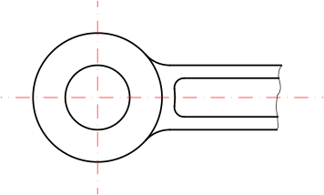

<p>С този инструмент можете да чертаете свободни линии. Този инструмент
обикновено се използва пестеливо, тъй като техническите чертежи изискват
абсолютна точност. Въпреки това в някои случаи този инструмент може да бъде
полезен, например за прекъснати ръбове, както е показано тук: 
<br />
</p>
